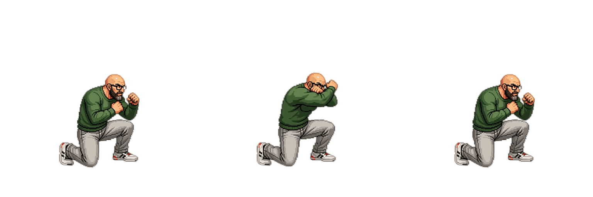
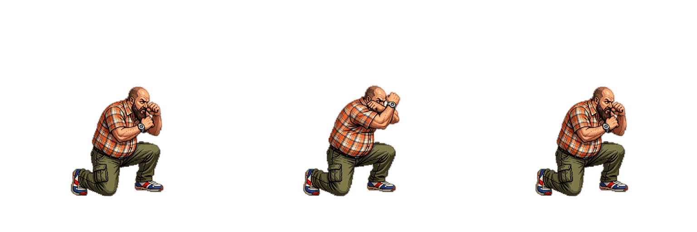
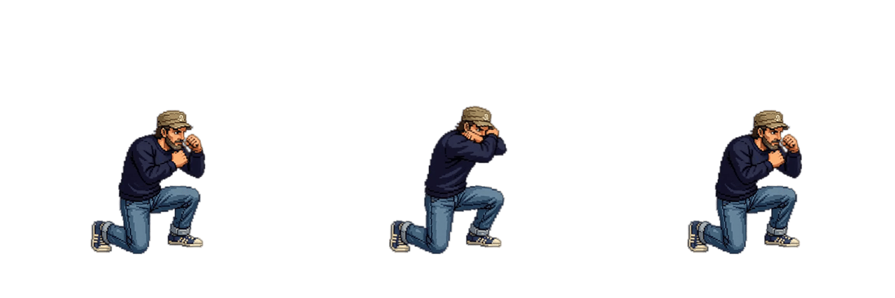
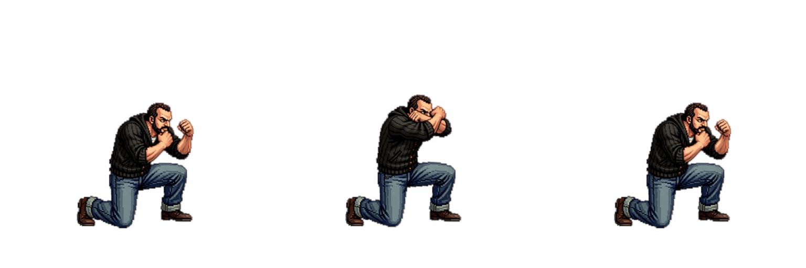
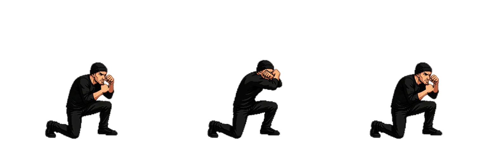
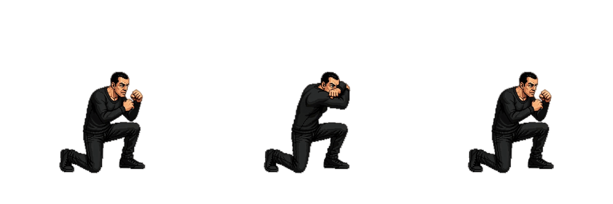
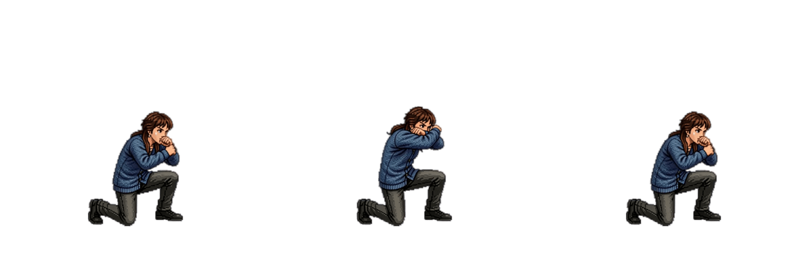
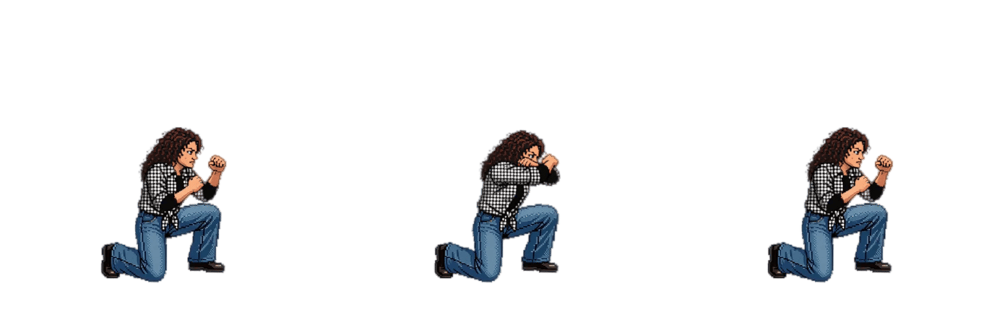
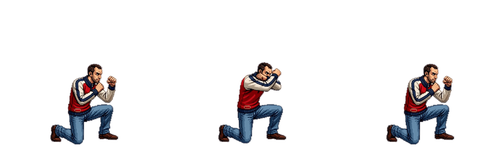

Apri Parata accovacciata nella demo
Timing parata accovacciata
Aggiornato il 21 novembre 2026. Nove personaggi, ciclo completo 0,5 s, posa finale di parata raggiunta a 0,25 s.
Ogni intervallo salvato su AutoSprite viene eseguito avanti e poi al contrario, senza duplicare il vertice. Il ritorno finisce nella guardia accovacciata iniziale. Loop e CRT attivi nella demo. Oscar usa Crouch Block v2; gli altri Crouch Block. Preferite le versioni trimmed salvate.
I frame sorgente sono indicizzati da zero nello spritesheet selezionato. I due FPS indicano andata e ritorno: durate per frame adattate al numero di celle per mantenere entrambe le fasi a 250 ms. Scala, padding e pixel RGBA originali conservati.
Le immagini mostrano guardia / parata / guardia. Per Godot usare i frame e le durate degli atlas, mantenendo la guardia accovacciata come stato iniziale e finale. Scarica CSV.
| Personaggio | Guardia / parata / ritorno | Intervallo / frame sorgente | Frame riprodotti | FPS andata / ritorno | Parata / fine | Provenienza |
|---|
| ALBERTO |  | 0–9 / 22 | 19 | 36 / 40 | 250 ms / 500 ms | Crouch Block
cmwowxwi4000x13rdor5nu4ul
Atlas |
|---|
| FABIO-CLARA |  | 0–9 / 21 | 19 | 36 / 40 | 250 ms / 500 ms | Crouch Block
cmwowzcao0024bsqm6kz9t162
Atlas |
|---|
| SBOZ |  | 0–7 / 8 | 15 | 28 / 32 | 250 ms / 500 ms | Crouch Block
cmwq4ez9s000b22vs3pk0hj21
Atlas |
|---|
| PIPPO |  | 0–13 / 22 | 27 | 52 / 56 | 250 ms / 500 ms | Crouch Block
cmwq4d3wq0013gz15nxxdop75
Atlas |
|---|
| PEPPO |  | 0–9 / 15 | 19 | 36 / 40 | 250 ms / 500 ms | Crouch Block
cmwq4bvtq001017zi6iyj19t6
Atlas |
|---|
| Oscar |  | 0–9 / 21 | 19 | 36 / 40 | 250 ms / 500 ms | Crouch Block v2
cmwowsijf001absqm0pv3kwoo
Atlas |
|---|
| Elisa |  | 0–11 / 20 | 23 | 44 / 48 | 250 ms / 500 ms | Crouch Block
cmwq47yde002yfg417seq09qm
Atlas |
|---|
| FRA-TAVARONE |  | 0–8 / 23 | 17 | 32 / 36 | 250 ms / 500 ms | Crouch Block
cmwq4ane5000d88pp76yy1hh8
Atlas |
|---|
| MARSAN |  | 0–9 / 21 | 19 | 36 / 40 | 250 ms / 500 ms | Crouch Block
cmwq49qaw000q17ziy93135r2
Atlas |
|---|